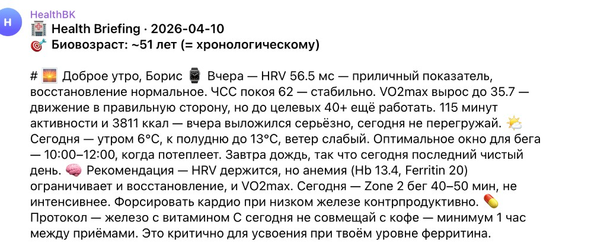
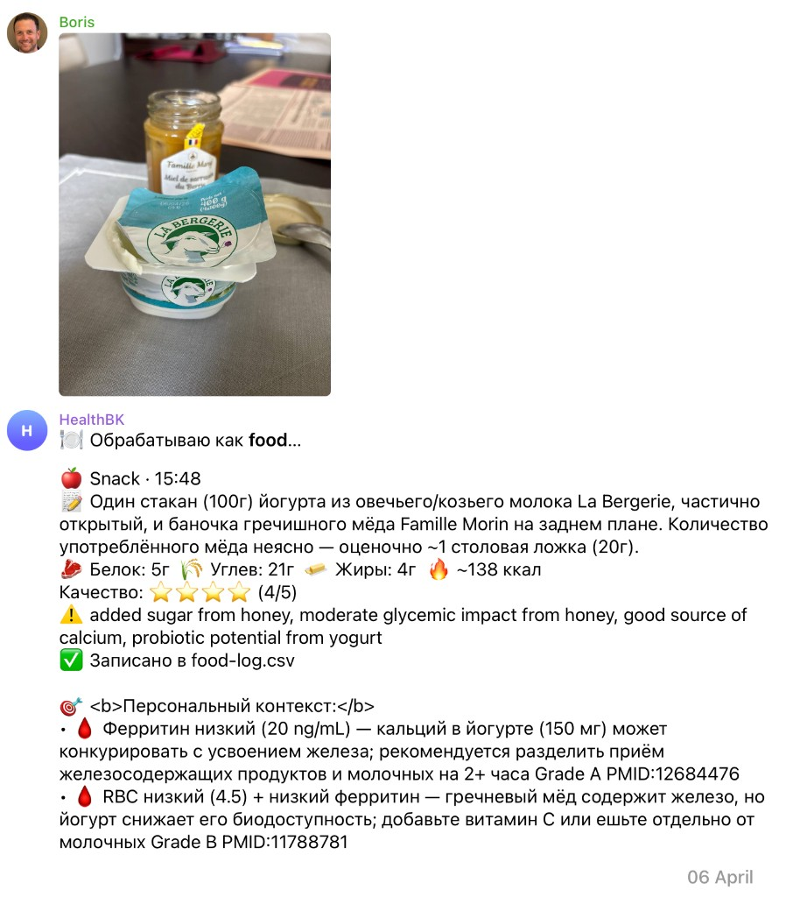
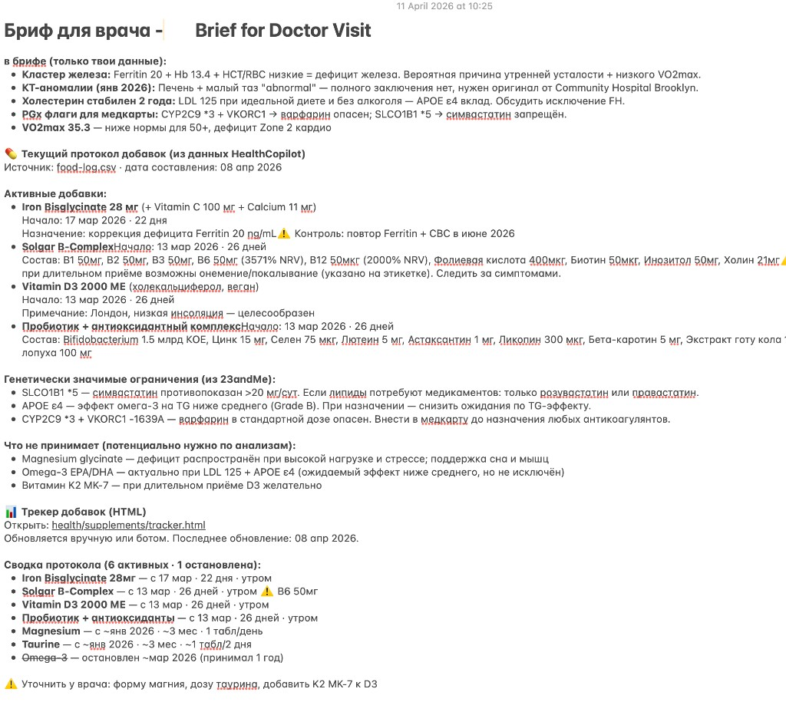

Здоровье разбросано по приложениям. Здесь — собрано.
Один спокойный канал в Telegram: утро, еда по фото, лист к врачу. Ниже — как это выглядит на практике, без лишних экранов.
Сводка связывает сон, нагрузку, погоду, лабораторию и ваши цели — чтобы вы принимали решения спокойно, а не по памяти между вкладками.
Один поток: входы → ядро → то, что вы читаете
Система держит разные типы данных и отдаёт наружу короткие, проверяемые ответы — утренний брифинг, разбор еды, подготовку к приёму.
Лаборатории
Тренды и контекст, без «пугающих» выводов вместо врача.
Носимые
Сон, пульс, нагрузка — как фон для плана дня.
Генетика
Осторожные формулировки и оговорки к обсуждению со специалистом.
Питание
Фото и текст → макросы и смысл для вашего профиля.
Журнал
Симптомы и заметки не теряются между визитами.
Документы
PDF и снимки раскладываются по темам автоматически.
Утро — один экран вместо пяти приложений
Брифинг склеивает восстановление, календарь нагрузки, погоду и лабораторный фон в одну повестку дня — чтобы вы не собирали это в голове с утра.

Еда по фото — не только калории
Бот распознаёт блюдо, оценивает состав и добавляет персональный контекст: как это сочетается с вашим профилем и с опубликованными данными (с грейдом силы доказательности и ссылкой на статью, когда это уместно).


К врачу — с одним листом, а не с папкой «на память»
Документ собирает ключевые кластеры (лаборатория, визуальные исследования, липиды, фармакогенетика), текущий протокол добавок и вопросы, которые легко забыть за 10 минут приёма.

Почему этому можно доверять
Сила каждого нетривиального утверждения помечается градацией. Сильные утверждения опираются на руководства и исследования; слабые — честно помечаются как гипотезы.
Health Copilot не заменяет врача и не ставит диагнозы. Это инструмент подготовки и ясности — решения остаются за вами и вашим врачом.
Хотите понять, подходит ли вам такой формат?
Напишите коротко, чем вы пользуетесь сегодня (часы, лаборатории, генетика) — подскажем, как это может выглядеть в вашем Telegram.
Telegram — @BKproduct